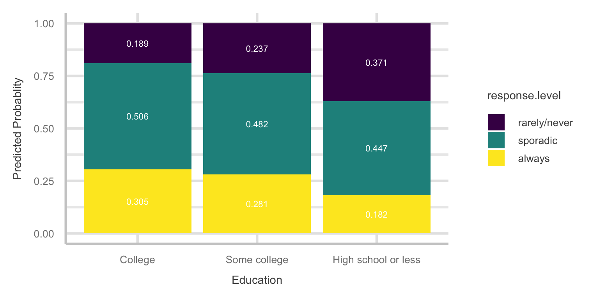

Code
library(nnet)
library(car)
library(tidyverse)
library(emmeans)
library(ggeffects)
library(knitr)
library(patchwork)
library(broom)
library(parameters)
library(easystats)Lab Goal: Predict voting frequency using demographic variables Data source: FiveThirtyEight “Why Many Americans Don’t Vote” survey Method: Multinomial logistic regression
The data for this assignment comes from an online Ipsos survey that was conducted for the FiveThirtyEight article “Why Many Americans Don’t Vote”. You can read more about the survey design and respondents in the README of the GitHub repo for the data.
Respondents were asked a variety of questions about their political beliefs, thoughts on multiple issues, and voting behavior. We will focus on using the demographic variables and someone’s party identification to understand whether a person is a probable voter.
The variables we’ll focus on were (definitions from the codebook in data set GitHub repo):
ppage: Age of respondent
educ: Highest educational attainment category.
race: Race of respondent, census categories. Note: all categories except Hispanic were non-Hispanic.
gender: Gender of respondent
income_cat: Household income category of respondent
Q30: Response to the question “Generally speaking, do you think of yourself as a…”
voter_category: past voting behavior:
You can read in the data directly from the GitHub repo:
library(nnet)
library(car)
library(tidyverse)
library(emmeans)
library(ggeffects)
library(knitr)
library(patchwork)
library(broom)
library(parameters)
library(easystats)voter_data <- read_csv("https://raw.githubusercontent.com/fivethirtyeight/data/master/non-voters/nonvoters_data.csv")Q30 contains the respondent’s political party identification. Make a new variable that simplifies Q30 into four categories: “Democrat”, “Republican”, “Independent”, “Other” (“Other” also includes respondents who did not answer the question).voter_data <- voter_data %>%
mutate(pol_ident_new = case_when(
Q30==1 ~ "Rep",
Q30==2 ~ "Dem",
Q30==3 ~ "Indep",
TRUE ~ "Other"
))voter_category identifies the respondent’s past voter behavior. Relevel the variable to make rarely/never the baseline level, followed by sporadic, then alwaysvoter_data <- voter_data %>%
mutate(voter_category = factor(voter_category,
levels = c("rarely/never", "sporadic", "always"),
ordered = TRUE))voter_data = voter_data %>%
mutate(ppage = scale(voter_data$ppage,scale=FALSE))# library
library(ggplot2)
library(viridis)
library(cowplot)
library(ggchicklet)
# Enter code
voter_race <- voter_data %>%
count(race, voter_category) %>%
mutate(proportion = n / sum(n))
# ggplot(voter_race, aes(x = race, y = proportion, fill = voter_category)) +
# geom_bar(stat="identity",position="fill") + coord_flip()
# labs(x="Race", y="Proportion")
plt_race = voter_race %>%
ggplot(aes(x=race, y=proportion, group = voter_category, fill = voter_category)) +
geom_chicklet(width = 0.75, position="fill") +
scale_y_continuous(
expand = c(0, 0.0625),
position = "right",
breaks = seq(0, 1, 0.25),
labels = c("0%", seq(25, 100, 25))
) +
coord_flip() +
labs(x="Race", y="Proportion")
plt_race# Enter code
voter_gender <- voter_data %>%
count(gender, voter_category) %>%
mutate(proportion = n / sum(n))
plt_gender = voter_gender %>%
ggplot(aes(x=gender, y=proportion, group = voter_category, fill = voter_category)) +
geom_chicklet(width = 0.75, position="fill") +
scale_y_continuous(
expand = c(0, 0.0625),
position = "right",
breaks = seq(0, 1, 0.25),
labels = c("0%", seq(25, 100, 25))
) +
coord_flip() +
labs(x="Gender", y="Proportion")
plt_genderThe plots can be combined into a single plot using the patchwork package.
library(patchwork)
plt_race / plt_genderlibrary(nnet)
model = multinom(voter_category ~ ppage + race + gender + income_cat + educ,
data = voter_data)# weights: 36 (22 variable)
initial value 6411.501317
iter 10 value 5869.948482
iter 20 value 5728.474131
final value 5693.312867
convergedmodel2 = multinom(voter_category ~ ppage + race + gender + income_cat + educ + pol_ident_new,
data = voter_data)# weights: 45 (28 variable)
initial value 6411.501317
iter 10 value 5818.012349
iter 20 value 5709.034111
iter 30 value 5621.228937
final value 5616.390878
convergedanova(model, model2) %>%
kable()| Model | Resid. df | Resid. Dev | Test | Df | LR stat. | Pr(Chi) |
|---|---|---|---|---|---|---|
| ppage + race + gender + income_cat + educ | 11650 | 11386.63 | NA | NA | NA | |
| ppage + race + gender + income_cat + educ + pol_ident_new | 11644 | 11232.78 | 1 vs 2 | 6 | 153.844 | 0 |
> #Enter answer based on your code: Yes, party identification should be included in the modelUse the model you select for the remainder of the assignment.
Run the full model and report overall significance of each of the terms
car::Anova(model2) %>%
kable()| LR Chisq | Df | Pr(>Chisq) | |
|---|---|---|---|
| ppage | 638.297213 | 2 | 0.000000 |
| race | 52.651508 | 6 | 0.000000 |
| gender | 6.027914 | 2 | 0.049097 |
| income_cat | 67.721466 | 6 | 0.000000 |
| educ | 154.136763 | 4 | 0.000000 |
| pol_ident_new | 153.843978 | 6 | 0.000000 |
All the terms: age, race, gender, income, education, and party identification are all significant in predicting voter category
#Get estimated marginal means from the model
#using
multinomial_analysis <- emmeans(model2, ~ pol_ident_new|voter_category)
coefs = contrast(regrid(multinomial_analysis, "log"),"trt.vs.ctrl1", by="pol_ident_new")
# you can add a parameter to the above command, ref = newbaseline, if you want to change baseline
update(coefs, by = "contrast") %>%
kable(format = "markdown", digits = 3)| contrast | pol_ident_new | estimate | SE | df | t.ratio | p.value |
|---|---|---|---|---|---|---|
| sporadic - (rarely/never) | Dem | 0.961 | 0.070 | 28 | 13.722 | 0.000 |
| always - (rarely/never) | Dem | 0.480 | 0.074 | 28 | 6.498 | 0.000 |
| sporadic - (rarely/never) | Indep | 0.591 | 0.077 | 28 | 7.643 | 0.000 |
| always - (rarely/never) | Indep | -0.049 | 0.084 | 28 | -0.590 | 0.900 |
| sporadic - (rarely/never) | Other | 0.078 | 0.087 | 28 | 0.902 | 0.747 |
| always - (rarely/never) | Other | -0.835 | 0.110 | 28 | -7.577 | 0.000 |
| sporadic - (rarely/never) | Rep | 0.883 | 0.084 | 28 | 10.469 | 0.000 |
| always - (rarely/never) | Rep | 0.327 | 0.089 | 28 | 3.672 | 0.004 |
#Get estimated marginal means from the model
#using
multinomial_analysis <- emmeans(model2, ~ educ|voter_category)
coefs = contrast(regrid(multinomial_analysis, "log"),"trt.vs.ctrl1", by="educ")
# you can add a parameter to the above command, ref = newbaseline, if you want to change baseline
update(coefs, by = "contrast") %>%
kable(format = "markdown", digits = 3)| contrast | educ | estimate | SE | df | t.ratio | p.value |
|---|---|---|---|---|---|---|
| sporadic - (rarely/never) | College | 0.986 | 0.076 | 28 | 12.904 | 0.000 |
| always - (rarely/never) | College | 0.477 | 0.080 | 28 | 5.960 | 0.000 |
| sporadic - (rarely/never) | High school or less | 0.187 | 0.069 | 28 | 2.705 | 0.031 |
| always - (rarely/never) | High school or less | -0.711 | 0.080 | 28 | -8.883 | 0.000 |
| sporadic - (rarely/never) | Some college | 0.707 | 0.074 | 28 | 9.512 | 0.000 |
| always - (rarely/never) | Some college | 0.167 | 0.079 | 28 | 2.114 | 0.112 |
ggemmeans(model2, terms = c("ppage")) %>%
ggplot(., aes(x = x, y = predicted, fill = response.level)) +
geom_area() +
geom_rug(sides = "b", position = "jitter", alpha = .5) +
labs(x = "\nAge", y = "Predicted Probablity\n", title = "Predicted Probabilities of Voting Frequency by Age") +
scale_fill_manual(
name = NULL,
values = c("always" = "#F6B533", "sporadic" = "#D07EA2", "rarely/never" = "#9854F7"),
labels = c("RARELY OR NEVER VOTE ", "SOMETIMES VOTE ", "ALMOST ALWAYS VOTE "),
breaks = c("rarely/never", "sporadic", "always")
) +
theme_minimal() ggemmeans(model2, terms=c("pol_ident_new")) %>% ggplot(., aes(x = x, y = predicted, fill = response.level)) +
geom_bar(stat = "identity" ) +
geom_text(aes(label = round(predicted, 3)), color="white", position = position_fill(vjust = 0.5),size=3) +
labs(x="Education", y="Predicted Probablity") +
theme(text = element_text(size = 30)) +
scale_fill_viridis(discrete = TRUE) +
theme_lucid(base_size=25)
Plot predicted probabilities as a function of education and voting frequency.
ggemmeans(model2, terms=c("educ")) %>% ggplot(., aes(x = x, y = predicted, fill = response.level)) +
geom_bar(stat = "identity" ) +
geom_text(aes(label = round(predicted, 3)), color="white", position = position_fill(vjust = 0.5),size=3) +
labs(x="Education", y="Predicted Probablity") +
theme(text = element_text(size = 30)) +
scale_fill_viridis(discrete = TRUE) +
theme_lucid(base_size=25)
multinomial_analysis <- emmeans(model2, ~ pol_ident_new|voter_category)
coefs = contrast(regrid(multinomial_analysis, "log"),"trt.vs.ctrl1", by="pol_ident_new")
# you can add a parameter to the above command, ref = newbaseline, if you want to change baseline
update(coefs, by = "contrast") %>%
kable(format = "markdown", digits = 3)| contrast | pol_ident_new | estimate | SE | df | t.ratio | p.value |
|---|---|---|---|---|---|---|
| sporadic - (rarely/never) | Dem | 0.961 | 0.070 | 28 | 13.722 | 0.000 |
| always - (rarely/never) | Dem | 0.480 | 0.074 | 28 | 6.498 | 0.000 |
| sporadic - (rarely/never) | Indep | 0.591 | 0.077 | 28 | 7.643 | 0.000 |
| always - (rarely/never) | Indep | -0.049 | 0.084 | 28 | -0.590 | 0.900 |
| sporadic - (rarely/never) | Other | 0.078 | 0.087 | 28 | 0.902 | 0.747 |
| always - (rarely/never) | Other | -0.835 | 0.110 | 28 | -7.577 | 0.000 |
| sporadic - (rarely/never) | Rep | 0.883 | 0.084 | 28 | 10.469 | 0.000 |
| always - (rarely/never) | Rep | 0.327 | 0.089 | 28 | 3.672 | 0.004 |
# get difference between yes-no and fair-excellent
contrast(coefs, "revpairwise", by = "contrast") %>%
kable(format = "markdown", digits = 3)| contrast1 | contrast | estimate | SE | df | t.ratio | p.value |
|---|---|---|---|---|---|---|
| Indep - Dem | sporadic - (rarely/never) | -0.370 | 0.094 | 28 | -3.933 | 0.003 |
| Other - Dem | sporadic - (rarely/never) | -0.883 | 0.103 | 28 | -8.578 | 0.000 |
| Other - Indep | sporadic - (rarely/never) | -0.513 | 0.107 | 28 | -4.807 | 0.000 |
| Rep - Dem | sporadic - (rarely/never) | -0.078 | 0.099 | 28 | -0.787 | 0.860 |
| Rep - Indep | sporadic - (rarely/never) | 0.292 | 0.099 | 28 | 2.965 | 0.029 |
| Rep - Other | sporadic - (rarely/never) | 0.805 | 0.109 | 28 | 7.404 | 0.000 |
| Indep - Dem | always - (rarely/never) | -0.529 | 0.101 | 28 | -5.255 | 0.000 |
| Other - Dem | always - (rarely/never) | -1.315 | 0.125 | 28 | -10.508 | 0.000 |
| Other - Indep | always - (rarely/never) | -0.786 | 0.129 | 28 | -6.072 | 0.000 |
| Rep - Dem | always - (rarely/never) | -0.153 | 0.104 | 28 | -1.470 | 0.468 |
| Rep - Indep | always - (rarely/never) | 0.376 | 0.104 | 28 | 3.605 | 0.006 |
| Rep - Other | always - (rarely/never) | 1.162 | 0.130 | 28 | 8.969 | 0.000 |
Enter your interpretation here:
Voters who are Democrats are 2.61 times more likely to vote sporadically than vote rarely/never.
Voters who are Democrats are 1.62 times more likely to vote always than vote rarely/never.
Voters who are Independents are 1.81 times more likely to vote sporadically than vote rarely/never.
Voters who are Independents are 4.78% less likely to vote always than vote rarely/never.
Voters who belong to other political parties are 1.08 times more likely to vote sporadically than vote rarely/never.
Voters who belong to other political parties are 56.61% less likely to vote always than vote rarely/never.
Voters who are Republicans are 2.42 times more likely to vote sporadically than vote rarely/never.
Voters who are Republicans are 1.39 times more likely to vote always than vote rarely/never.
Voters who are Independents are 30.93% less likely to vote sporadically than vote rarely/never compared to voters who are Democrats.
Voters who belong to voters who belong to other political parties are 58.65% less likely to vote sporadically than vote rarely/never compared to voters who are Democrats.
Voters who belong to other political parties are 40.13% less likely to vote sporadically than vote rarely/never compared to voters who are Republicans.
Voters who are Republicans are 7.50% less likely to vote sporadically than vote rarely/never compared to voters who are Democrats.
Voters who are Republicans are 1.34 times more likely to vote sporadically than vote rarely/never compared to voters who are Independents.
Voters who are Republicans are 2.24 times more likely to vote sporadically than vote rarely/never compared to voters who belong to other political parties.
Voters who are Independents are 41.08% less likely to vote always than vote rarely/never compared to voters who are Democrats.
Voters who belong to other political parties are 73.15% less likely to vote always than vote rarely/never compared to voters who are Democrats.
Voters who belong to other political parties are 54.43% less likely to vote always than vote rarely/never compared to voters who are Republicans.
Voters who are Republicans are 14.19% less likely to vote always than vote rarely/never compared to voters who are Democrats.
Voters who are Republicans are 1.46 times more likely to vote always than vote rarely/never compared to voters who are Independents.
Voters who are Republicans are 3.20 times more likely to vote always than vote rarely/never compared to voters who belong to other political parties.
Last part of the assignment: Interpret the results from running the following code for your model
multi_an <- emmeans(model, ~ educ|voter_category)
coefs = contrast(regrid(multi_an, "log"),"trt.vs.ctrl1", by="educ")
update(coefs, by = "contrast") %>%
kable(format = "markdown", digits = 3)| contrast | educ | estimate | SE | df | t.ratio | p.value |
|---|---|---|---|---|---|---|
| sporadic - (rarely/never) | College | 1.156 | 0.075 | 22 | 15.483 | 0.000 |
| always - (rarely/never) | College | 0.711 | 0.079 | 22 | 9.041 | 0.000 |
| sporadic - (rarely/never) | High school or less | 0.259 | 0.069 | 22 | 3.749 | 0.003 |
| always - (rarely/never) | High school or less | -0.602 | 0.081 | 22 | -7.476 | 0.000 |
| sporadic - (rarely/never) | Some college | 0.806 | 0.075 | 22 | 10.818 | 0.000 |
| always - (rarely/never) | Some college | 0.311 | 0.080 | 22 | 3.895 | 0.002 |
# get difference between yes-no and fair-excellent
contrast(coefs, "revpairwise", by = "contrast") %>%
kable(format = "markdown", digits = 3)| contrast1 | contrast | estimate | SE | df | t.ratio | p.value |
|---|---|---|---|---|---|---|
| High school or less - College | sporadic - (rarely/never) | -0.897 | 0.095 | 22 | -9.409 | 0.000 |
| Some college - College | sporadic - (rarely/never) | -0.349 | 0.092 | 22 | -3.779 | 0.003 |
| Some college - High school or less | sporadic - (rarely/never) | 0.547 | 0.089 | 22 | 6.162 | 0.000 |
| High school or less - College | always - (rarely/never) | -1.313 | 0.105 | 22 | -12.463 | 0.000 |
| Some college - College | always - (rarely/never) | -0.401 | 0.098 | 22 | -4.091 | 0.001 |
| Some college - High school or less | always - (rarely/never) | 0.913 | 0.099 | 22 | 9.206 | 0.000 |
Enter your interpretation here:
Voters with a highest degree of college are 3.18 times more likely to vote sporadically than vote rarely/never.
Voters with a highest degree of college are 2.04 times more likely to vote always than vote rarely/never.
Voters with a highest degree of high school or less are 1.30 times more likely to vote sporadically than vote rarely/never.
Voters with a highest degree of high school or less are 45.23% less likely to vote always than vote rarely/never.
Voters with a highest degree of some college are 2.24 times more likely to vote sporadically than vote rarely/never.
Voters with a highest degree of some college are 1.36 times more likely to vote always than vote rarely/never.
Voters with a highest degree of high school or less are 59.22% less likely to vote sporadically than vote rarely/never compared to voters with a highest degree of college.
Voters with a highest degree of some college are 29.46% less likely to vote sporadically than vote rarely/never compared to voters with a highest degree of college.
Voters with a highest degree of some college are 1.73 times more likely to vote sporadically than vote rarely/never compared to voters with a highest degree of high school or less.
Voters with a highest degree of high school or less are 73.10% less likely to vote always than vote rarely/never compared to voters with a highest degree of college.
Voters with a highest degree of some college are 33.03% less likely to vote always than vote rarely/never compared to voters with a highest degree of college.
Voters with a highest degree of some college are 2.49 times more likely to vote always than vote rarely/never compared to voters with a highest degree of high school or less.